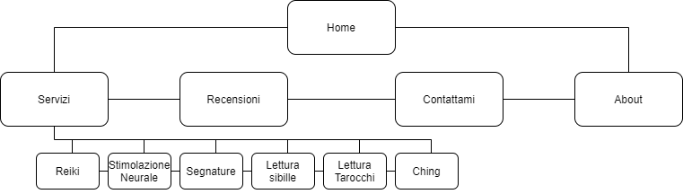
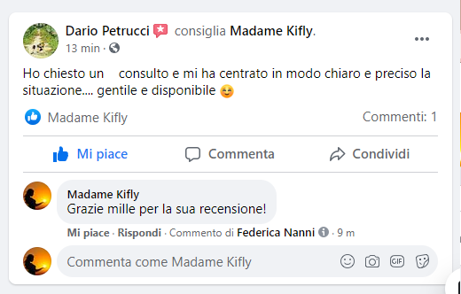
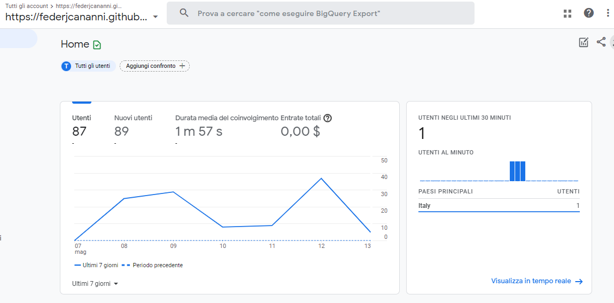
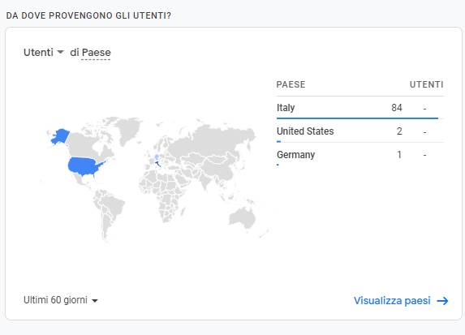
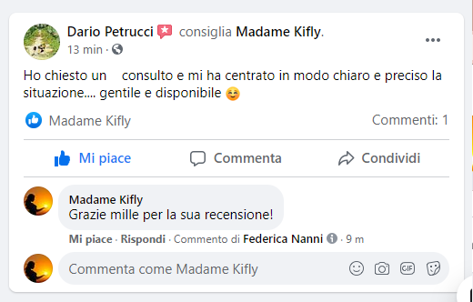
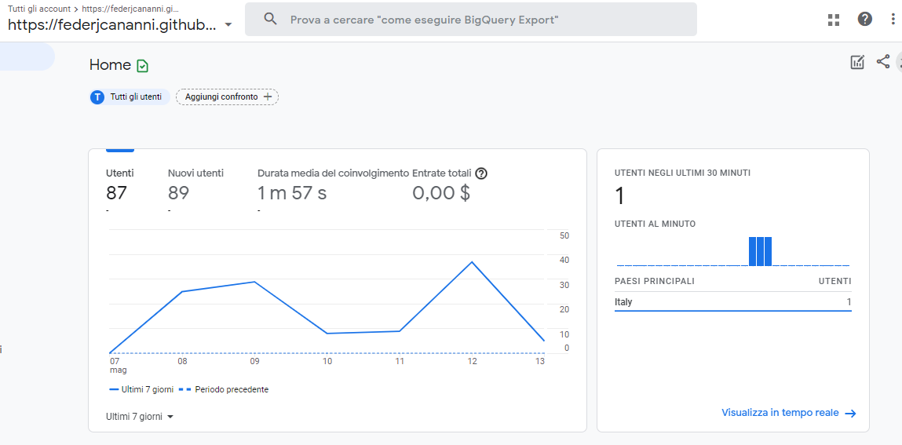
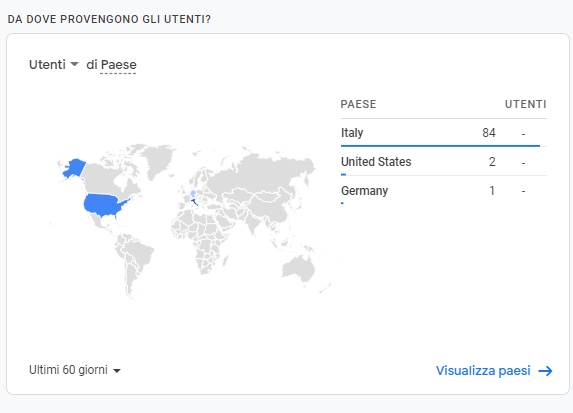

Abstract
Questo sito è nato con lo scopo di aiutare e di pubblicizzare Madame Kifly racchiudendo tutte le informazioni utili in unica area. E’ un sito responsive, intuitivo e semplice in quanto il target principale sono coloro che già hanno una certa conoscenza sul tema. Il sito fornisce una vetrina di ciò che viene offerto e la possibilità al cliente di interagire con il titolare tramite i social o tramite la sezione contattami. Grazie a spiegazioni essenziali e recensioni, si può venir a conoscenza di questa nuova realtà e dell'utilità che offre a coloro che vi prendono parte.
1) Benchmarking
- Obiettivi: Informare, aiutare e far conoscere a più persone possibili Madame Kifly.
- Target: rivolto a coloro che già hanno una conoscenza del tema e con un’età che varia dai 25 ai 60 anni. Questo non limita anche alle altre persone di venire a contatto con questa realtà, in quanto vi è la possibilità di usufruire delle spiegazioni che il sito offre.
- Competitors : valutati su una scala da 1 a 3 dal punto di vista della completezza delle informazioni fornite, dell’usabilità del sito, la grafica e la similarità del servizio.
Il Bagatto e la Papessa: Sito responsive che ha come pregio la sezione degli approfondimenti. La grafica è semplice, avrei scelto colori che avessero più contrasto fra loro. Nella sezione servizi, contatti e articoli i paragrafi sono stati messi in modo disordinato senza troppo stile e con poche immagini rappresentative. La navbar si distacca quando si scorre il sito e questo porta un certo fastidio visivo. Informazioni 3, Usabilità 3, Grafica 1, Similarità 3
Ti leggo il futuro semplice e molto incentrato sui temi trattati. Il pregio fondamentale è il collegamento con Youtube e le letture interattive. La debolezza del blog è la densità nelle spiegazioni e la non responsività, difatti è impossibile utilizzarlo via telefono. Il sito poco organizzato es. la navbar è incasinata. Molte funzioni, es. la traduzione, non vanno. I social e le mail non sono stati linkati e questo rende l'azione più lunga al visitatore Informazioni 3, Usabilità 2, Grafica 2, Similarità 2
Leggi della Magia Il pregio del sito è la sezione ricerca e la coerenza fra tutte le pagine. La pagina dedicata ai contatti è scarna, l'avrei integrata per esempio con la newsletter. Il colore dell'hover differisce a seconda della sezione, nella navbar è arancione, in fondo è bianco e nel cambio delle attività del blog gialla. La navbar non segue lo scrool e questo non permette al visitatore di cambiare pagina in qualsiasi momento. Informazioni 3, Usabilità 2, Grafica 2, Similarità 2
Cartomante Lory Essenziale, funzionale e responsive, è un sito one page come il mio e presenta una grafica molto vivace e accattivante. Gli unici difetti sono la sovrapposizione di due bottoni (whatsapp e il scroll to top), l'utilizzo di un font corsivo elegante non tanto leggibile, la mancanza di una navbar che non permette al visitatore di cercare subito quello che gli interessa, questo comporta una perdita di tempo. Inoltre, è molto concentrata sul call to action del contatto. Informazioni 2, Usabilità 2.5, Grafica 3, Similarità 2
2) Struttura layout
- Architettura 
- Wireframe
Wareframe pc:


Wareframe cellulare:


3) Look and feel
Il sito è stato progettato per renderlo maggiormente piacevole e fruibile agli occhi dei visitatori: per questo ho puntato sulla grafica, su un’organizzazione pulita, animazione e responsività tenendo sempre una coerenza con i temi trattati.
Il logo va sintetizzare il tema del sito. Le immagini sono state realizzate da me, tranne le icone presenti nell’about e logo. Per il sito è stata scelta una palette calda e con una tonalità più scura in quanto esprimono spiritualità.

- ° usato per l’hover e in questo caso il solo colore rappresenta la saggezza, ambizione e armonia interiore.
- ° usato per la navbar e il colore rappresenta quello del 7 Chakra ed è associato alla salute, nobiltà, saggezza e mistero.
- ° usato per il footer e i riquadri delle recensioni. Il colore, unico più freddo dei tre, è stato scelto in quanto comunica calma, modernità e un distacco formale.
- ° usato principalmente per dare tonalità ai bottoni in quanto come colore, oltre ad essere associato all’energia, al sole e alla crescita, favorisce l’attenzione.
I titoli delle varie sezioni sono stati messi con un colore nero o bianco a seconda del background. I font utilizzati per assicurare la migliore esperienza possibile nella lettura dei contenuti sono stati: “Montserrant” per i titoli, “El Messir” per i sottotitoli, “Josefin Sans” per le spiegazioni.
4) Linguaggi e Strumenti
I linguaggi utilizzati: HTML5, CSS3, e JAVASCRIPT.
- Strumenti
- Visual code: programmazione
- Bootstrap
- Canva: volantino
- Photoshop: modifica immagini
- Aos: animazioni
- Google font
- Balsamic Wireframes
- Color Designer: palette di colori
- Dev Ed: per alcuni codici
- Icon-icons: icone
- Pngtree: immagini png
- Github: pubblicazione
- Google Analytics: misurazione delle visite
.png)
 




